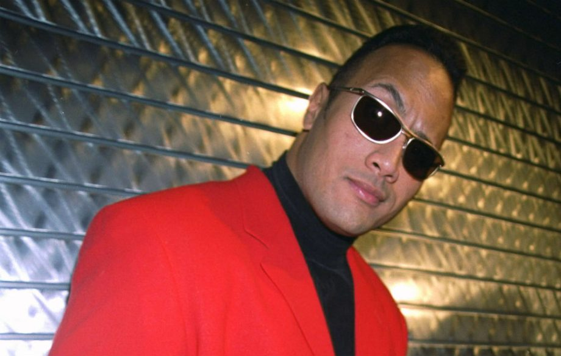

Dwayne Douglas Johnson
Johnson was born on May 2, 1972, in Hayward, California, to Ata Johnson (née Maivia) (b.1948) and former professional wrestler Rocky Johnson (born Wayde Douglas Bowles) (b.1944). Johnson briefly lived in New Zealand with his mother's family, settling in Grey Lynn. He attended Richmond Road Primary School, before returning to the U.S. with his parents. In the United States, he attended Shepherd Glen Elementary School and Hamden Middle School in Hamden, Connecticut, then spent 10th grade at President William McKinley High School in Honolulu, Hawaii. As he entered 11th grade, his father's job required relocation to Bethlehem, Pennsylvania, where Johnson began playing football at Freedom High School in the East Penn Conference. He was also a member of the school's track and field and wrestling teams
As of 2014, Johnson resides in Southwest Ranches, Florida. In recognition of his service to the Samoan people, and because he is a descendant of Samoan chiefs, Johnson had the noble title of Seiuli bestowed upon him by Malietoa Tanumafili II during his visit there in July 2004. He received a partial Samoan pe'a tattoo on his left side in 2003, and in 2017 had the small "brahma bull" tattoo on his right arm covered with a larger half-sleeve tattoo of a bull's skull.
Family
Parents: Ata and Rocky Johnson
Johnson's father is a Black Canadian (Nova Scotian) and part of the first black tag team champions in WWE history back when it was known as the WWF along with Tony Atlas. His mother is from a Samoan family. His maternal grandfather, "High Chief" Peter Maivia, was also a wrestler, and his maternal grandmother, Lia Maivia, was one of wrestling's few female promoters, taking over Polynesian Pacific Pro Wrestling after her husband's death in 1982, until 1988.Through his mother, he is considered a non-blood relative of the Anoa'i wrestling family. On March 29, 2008, The Rock inducted his father and his grandfather into the WWE Hall of Fame.
Children: Tiana, Jasmine, Simone
Spouse: Dany Garcia
Johnson married Dany Garcia on May 3, 1997. Their only child together, a daughter was born in 2001. On June 1, 2007, they announced they were splitting up amicably; they continue to work together.
Partner?! Lauren Hashian
Soon after his divorce, Johnson began dating Lauren Hashian, daughter of Boston drummer Sib Hashian. They first met in 2006 while Johnson was filming The Game Plan. Their first child together, a daughter, was born in December 2015. Their second child together, another daughter, was born in April 2018.